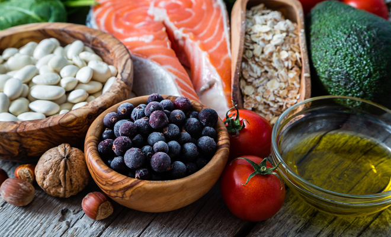

Detalles de la dieta
Una dieta contra la diabetes se basa en tres comidas al día en horarios regulares. Esto ayuda a que tu cuerpo haga mejor uso de la insulina que produce o se recupere de un medicamento.
Un especialista en nutrición matriculado puede ayudarte a armar una dieta según tus metas de salud, gustos y estilo de vida. Este profesional puede hablar contigo sobre de qué modo puedes mejorar tus hábitos alimenticios, por ejemplo, al elegir tamaños de porciones que se adapten a tus necesidades de tamaño y nivel de actividad.

Alimentos recomendados
Haz valer las calorías con estos alimentos nutritivos:
- Carbohidratos saludables. Durante la digestión, los azúcares (carbohidratos simples) y almidones (carbohidratos complejos) se convierten en glucosa en la sangre. Enfócate en los carbohidratos más saludables, como frutas, vegetales, cereales integrales, legumbres (frijoles, guisantes [arvejas, chícharos] y lentejas) y productos lácteos con bajo contenido de grasa.
- Alimentos con alto contenido de fibra. La fibra alimentaria comprende todas las partes de las plantas que tu cuerpo no puede digerir o absorber como alimento. La fibra regula la digestión del cuerpo y ayuda a controlar los niveles de azúcar en la sangre. Entre los alimentos con alto contenido de fibra, se incluyen vegetales, frutas, nueces, legumbres (frijoles, guisantes [arvejas, chícharos] y lentejas), harina de trigo integral y salvado./li>
- Pescados saludables para el corazón. Come pescados saludables para el corazón al menos dos veces por semana. El pescado puede ser una buena alternativa a las carnes con alto contenido de grasa. Por ejemplo, el bacalao, el atún y el fletán tienen menos grasas totales, grasas saturadas y colesterol que las carnes rojas y las carnes de ave de corral. Los pescados como el salmón, la caballa, el atún, las sardinas y la anjova tienen alto contenido de ácidos grasos omega-3, que mejoran la salud cardíaca al reducir las grasas en la sangre, conocidas como triglicéridos.
Evita comer pescado frito y pescados con altos niveles de mercurio, como pangasius, pez espada y caballa real.
- Grasas buenas. Los alimentos que contienen grasas monoinsaturadas y poliinsaturadas pueden ayudar a reducir los niveles de colesterol. Entre estas, se incluyen aguacates, almendras, nueces, aceitunas y aceites de canola, oliva y maní. Pero no exageres, ya que todas las grasas tienen alto contenido calórico.
Sin embargo, teniendo controlada la diabetes se pueden evitar o disminuir muchas de estas complicaciones.